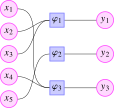
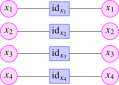

The notion of \(\infty \)-operad we are after is a homotopical version of the notion of colored operad introduced in the previous section: the set \(\Oo ^{\simeq }\) of colors should be replaced by an anima, and similarly the sets \(\Oo ((y_1, \dots , y_n);x)\) of multimorphisms should be replaced by animae. This leads to some subtleties regarding higher coherences: the unitality and associativity conditions required in Definition 12.2.1 should now become additional data, and this data should again satisfy further higher compatibilities. Writing down all the required structure explicitly would be impractical.
Fortunately, there is a way to circumvent this difficulty: the unitality, associativity and permutation laws required in an operad \(\Oo \) can be reformulated in terms of a certain symmetric monoidal category \(\Env (\Oo )\) called the envelope of the operad. This alternative description of operads can immediately be adapted to the \(\infty \)-categorical setting, thus providing a definition of \(\infty \)-operads. Let us therefore begin by describing this envelope construction in the classical setting.
We start with an observation regarding the formulation of colored operads: while we have formulated the notion of multimorphisms only for ordered tuples \((y_1, \dots , y_n) \in (\Oo ^{\simeq })^n\), it is actually more natural to formulate them for unordered tuples:
Definition 12.3.1. An unordered tuple of the set \(\Oo ^{\simeq }\) is a pair \((I,x)\) where \(I\) is a finite set and where \(x\colon I \to \Oo ^{\simeq }\) is a family of colors \(x_i\) indexed by \(I\). We will often denote such unordered tuples by \(\{x_i\}_{i \in I}\).
Given two unordered tuples \(\{x_i\}_{i \in I}\) and \(\{y_j\}_{j \in J}\), we can form their unordered concatenation \[ \{x_i\}_{i \in I} \sqcup \{y_j\}_{j \in J} \quad := \quad \{z_k\}_{k \in K}, \qquad \qquad K := I \sqcup J, \quad z_i := x_i, \quad z_j := y_j. \] More generally, if we are given a finite family \(\{x^j_i\}_{i \in I_j}\) of unordered tuples for \(j \in J\), then their unordered concatenation is \(\{z_k\}_{k \in K}\) with \(K := \bigsqcup _{j \in J} I_j\) and \(z_{(j,i)} := x^j_i\).
Convention 12.3.2. Given a color \(x \in \Oo ^{\simeq }\) and an unordered tuple \(\{y_i\}_{i \in I}\), we define the set \[ \Oo (\{y_i\}_{i \in I}; x) \] of multimorphisms from \(\{y_i\}_{i \in I}\) to \(x\) by choosing a bijection \(I \cong \{1, \dots , n\}\) and using it to order the inputs. The permutation isomorphisms canonically identify the sets obtained from different choices, so the notation is independent of the chosen ordering. Under this convention, the composition map in the operad \(\Oo \) has the form \[ \circ \colon \Oo (\{y_i\}_{i \in I}; x) \times \prod _{i\in I} \Oo (\{z^i_j\}_{j \in J_i}; y_i) \to \Oo (\{z^i_j\}_{(i,j) \in \bigsqcup _{i \in I} J_i};x). \] The permutation isomorphism then says that for every bijection \(\sigma \colon J \xrightarrow {\cong } I\), there is an isomorphism \[ \Oo (\{y_i\}_{i \in I}; x) \xrightarrow {\cong } \Oo (\{y_{\sigma (j)}\}_{j \in J}; x). \]
Henceforth, we shall use the unordered notation for colored operads.
Definition 12.3.3. Let \(\Oo \) be a colored operad. We define a symmetric monoidal category \(\Env (\Oo )\), called the envelope of \(\Oo \).
- The objects of \(\Env (\Oo )\) are unordered tuples \(\{x_i\}_{i \in I}\) of colors of \(\Oo \);
- A morphism \(\Phi \colon \{x_i\}_{i \in I} \to \{y_j\}_{j \in J}\) in \(\Env (\Oo )\) consists of a morphism of finite sets \(f\colon I \to J\) together with a multimorphism \(\phi _j \in \Oo (\{x_i\}_{i \in I_j};y_j)\) for
every \(j \in J\). Here we write \(I_j := f^{-1}(j)\) for the preimage of \(j\) under \(f\). We will visualize this data as follows:Here the function \(f\) is indicated by the lines from left to right, so that \(f(1) = f(4) = 3\), \(f(2) = f(3) = 1\) and \(f(5) = 2\).

- The identity of \(\{x_i\}_{i \in I}\) is given by taking \(f = \id _I \colon I \to I\), and taking \(\phi _j = \id _{x_j} \in \Oo (\{x_i\}_{i \in \{j\}};x_j)\):

- The composition of \(\Phi = (f,\phi _j)\colon \{x_i\}_{i \in I} \to \{y_j\}_{j \in J}\) and \(\Psi = (g, \psi _k)\colon \{y_j\}_{j \in J} \to \{z_k\}_{k \in K}\) is given by \(\Psi \circ \Phi = (h, \xi _k)\) where \(h := g \circ f\colon I \to K\) is the composition of \(g\) and \(f\), and for every \(k \in K\) the multimorphism \(\xi _k \in \Oo (\{x_i\}_{i \in I_k};z_k)\) is the image of \((\psi _k, (\phi _j)_{j \in J_k})\) under the composition map \[ \circ \colon \Oo (\{y_j\}_{j \in J_k};z_k) \times \prod _{j \in J_k} \Oo (\{x_i\}_{i \in I_j}; y_j) \to \Oo (\{x_i\}_{i \in I_k};z_k); \] here we are implicitly using that \(I_k = (g \circ f)^{-1}(k) = f^{-1}(g^{-1}(k))\) may be written as the disjoint union of the sets \(I_j = f^{-1}(j)\) for \(j \in J_k = g^{-1}(k)\).
- The fact that composition in \(\Env (\Oo )\) is unital and associative precisely amounts to the unitality and associativity conditions for colored operads.
The category \(\Env (\Oo )\) admits a symmetric monoidal structure given by unordered concatenation of tuples.
The composition in \(\Env (\Oo )\) may look somewhat difficult when written in formulas, but it becomes clear what one needs to do if one visually represents the morphisms using diagrams. For illustration, let us examine the composition of the following two morphisms in \(\Env (\Oo )\):
![Two diagrams side by side. On the left, five circular nodes $x_1$ to $x_5$ are wired into three rectangular nodes: $x_2$ and $x_3$ enter $\phi_1$, $x_5$ enters $\phi_2$, and $x_1$ and $x_4$ enter $\phi_3$, with outputs the circular nodes $y_1$, $y_2$, $y_3$. On the right, those three nodes $y_1$, $y_2$, $y_3$ are wired into four rectangular nodes $\psi_1$ to $\psi_4$: $y_1$ and $y_3$ enter $\psi_2$ and $y_2$ enters $\psi_4$, while $\psi_1$ and $\psi_3$ have no inputs at all and are therefore nullary. The four outputs are the circular nodes $z_1$ to $z_4$.](../../../_assets/diagrams/tikzpicture-3f14c1e251ed.svg)
First, we determine the composite map \(h := g \circ f\colon \{1, \dots , 5\} \to \{1, \dots , 4\}\); in this case, this is given by \(h(1) = h(2) = h(3) = h(4) = 2\) and \(h(5) = 4\). Note that the preimages \(h^{-1}(1)\) and \(h^{-1}(3)\) are empty, so that \(\xi _1\) and \(\xi _3\) will be nullary operations. The multimorphism \(\xi _2\) will have \(x_1\), \(x_2\), \(x_3\) and \(x_4\) as input colors, and is obtained by composing \(\psi _2\) with \((\phi _1,\phi _3)\), where we need to remember which of the four inputs should go into \(\phi _1\) and which ones go into \(\phi _3\). Finally, the multimorphism \(\xi _4\) has only \(x_5\) as input color, and is simply the composite \(\psi _4 \circ \phi _2\). The resulting composite morphism can be illustrated as follows:
![A wide diagram reading left to right. Five circular nodes $x_1$ to $x_5$ on the far left. The wires of $x_1$ to $x_4$ cross inside a narrow rectangle labelled $\sigma$ and re-emerge in the order $x_2$, $x_3$, $x_1$, $x_4$; the first two then enter the rectangular node $\phi_1$ and the last two enter $\phi_3$, with outputs $y_1$ and $y_3$. Both of these feed the node $\psi_2$, whose output is the circular node $z_2$. Separately, $x_5$ enters $\phi_2$ with output $y_2$, which enters $\psi_4$ with output $z_4$. The nodes $\psi_1$ and $\psi_3$ stand alone with no inputs, producing $z_1$ and $z_3$. Four dashed boxes are drawn: around $\psi_1$, labelled $\xi_1$; around the permutation rectangle, $\phi_1$, $\phi_3$, $y_1$, $y_3$ and $\psi_2$, labelled $\xi_2$; around $\psi_3$, labelled $\xi_3$; and around $\phi_2$, $y_2$ and $\psi_4$, labelled $\xi_4$.](../../../_assets/diagrams/tikzpicture-d640a4fbd031.svg)
Note: we draw the permutation \(\sigma \) here to match the ordered tuple convention used in Section 12.2, since the nodes must be drawn in some fixed order on the page. When working with unordered tuples, the \(\sigma \) would not appear: the composition of multimorphisms simply remembers that its inputs are indexed by the disjoint union of \(\{1,3\}\) and \(\{2,4\}\) without fixing any order between them.
Example 12.3.4. The envelope \(\Env (\Comm )\) of the commutative operad is the category \(\Fin \) of finite sets. The symmetric monoidal structure is given by disjoint union.
The construction \(\Oo \mapsto \Env (\Oo )\) is functorial in \(\Oo \) and is left adjoint to the multimorphism-operad construction \(C\mapsto \Mm _C\): operad morphisms \(\Oo \to \Mm _C\) correspond naturally to symmetric monoidal functors \(\Env (\Oo )\to C\). Verification of these assertions is left to the reader. In particular, since \(\Comm \) is terminal and \(\Env (\Comm )=\Fin \), every envelope comes with a symmetric monoidal functor \[ p\colon \Env (\Oo ) \longrightarrow \Env (\Comm ) = \Fin . \]
The nice feature about the envelope construction is that it allows us to formulate the unitality and associativity conditions for composition of multimorphisms in \(\Oo \) in terms of unitality and associativity of morphisms in an actual category. In particular, this could potentially provide a convenient way to generalize the definition of operads to the \(\infty \)-categorical setting. The main question we would then need to address is: what structure do we need on a symmetric monoidal category \(C\) to guarantee that it is of the form \(\Env (\Oo )\) for some operad \(\Oo \)? We identify the three crucial properties that \(\Env (\Oo )\) has:
- (1)
-
The colors of \(\Oo \) are precisely the objects that are sent to a one-point set \(\{i\}\) under the symmetric monoidal functor \(p\colon \Env (\Oo ) \to \Fin \).
- (2)
-
Given an object \(X \in \Env (\Oo )\) with \(p(X) = I\), we may uniquely write \(X\) as an \(I\)-tuple \(\{x_i\}_{i \in I}\) for some colors \(x_i \in p^{-1}(\{i\})\). Similarly, the morphisms in the fiber \(p^{-1}(I)\) are \(I\)-tuples of maps \(\{f_i\colon x_i \to y_i\}_{i \in I}\). In other words, the fiber over \(I\) is the \(I\)-fold product of the fiber over the one-point set.
- (3)
-
The morphisms into an arbitrary tuple \(\{y_j\}_{j \in J}\) are completely determined by morphisms into 1-tuples: If we consider two unordered tuples \(\{x_i\}_{i \in I}\) and \(\{y_j\}_{j \in J}\), then the fiber of the induced map \[ \Hom _{\Env (\Oo )}(\{x_i\}_{i \in I}, \{y_j\}_{j \in J}) \xrightarrow {p} \Hom _{\Fin }(I,J) \] over some map \(f\colon I \to J\) is given by the product \[ \prod _{j \in J} \Hom _{\Env (\Oo )}(\{x_i\}_{i \in I_j}, y_j). \]
The first property explains how to recover the colors from \(p\), while the remaining two characterize the morphisms and tensor products in the envelope. One can verify that a symmetric monoidal category \(C\) equipped with a symmetric monoidal functor \(p\colon C \to \Fin \) is of the form \(\Env (\Oo )\) for some \(\Oo \) if and only if it satisfies the corresponding analogues of conditions (2) and (3):
- (2’)
-
For every finite set \(I\), the tensor product in \(C\) defines an equivalence \[ \prod _{i \in I} C_{\{i\}} \iso C_I, \] where \(C_I\) is the fiber of \(p\) over \(I \in \Fin \);
- (3’)
-
For every finite collection \((I_j)_{j \in J}\) of finite sets and every collection of objects \(X_j \in p^{-1}(I_j)\) and \(y_j \in p^{-1}(\{j\})\), the commutative square

is a pullback square, where the bottom map hits the map \(\bigsqcup _{j \in J} I_j \to \bigsqcup _{j \in J} * = J\) induced by the maps \(I_j \to *\).
Exercise 12.3.5. Given a symmetric monoidal category \(C\) with \(p\colon C \to \Fin \) satisfying (2’) and (3’), construct a colored operad \(\Oo \) and a symmetric monoidal equivalence \(C \iso \Env (\Oo )\) over \(\Fin \).
Generated from the authoritative LaTeX source.